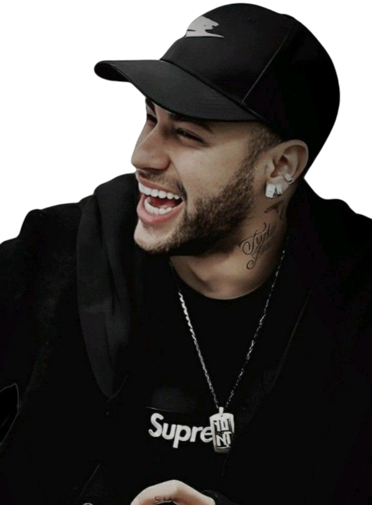
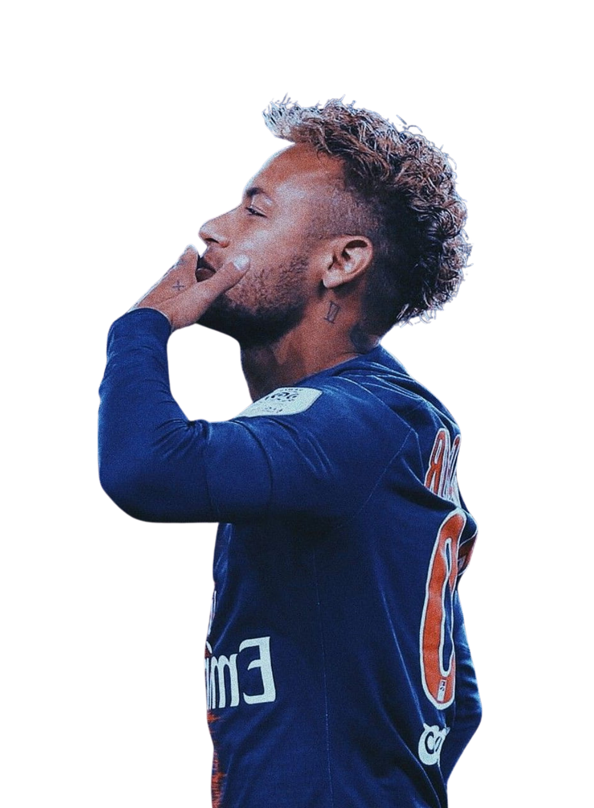
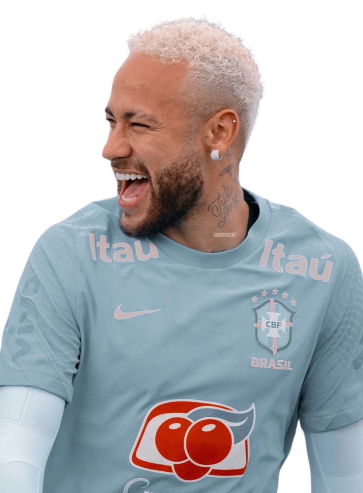
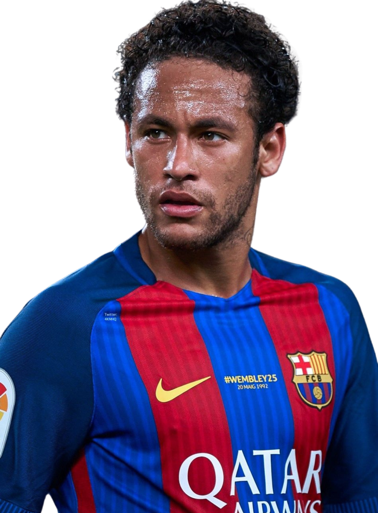

Neymar Jr
Neymar da Silva Santos Júnior, más conocido como Neymar Jr., es uno de los futbolistas más talentosos y reconocidos de su generación. Nacido en Mogi das Cruzes, Brasil, en 1992, Neymar comenzó a destacar desde muy joven en las categorías inferiores del Santos FC. Ascenso meteórico y reconocimi Debut profesional: A los 17 años, Neymar hizo su debut profesional con el Santos, donde rápidamente se convirtió en una figura clave y cautivó a los aficionados con su habilidad, regates y goles. Éxitos en Brasil: Conquistó numerosos títulos con el Santos, incluyendo la Copa Libertadores, la máxima competición a nivel de clubes en Sudamérica. Fichaje por el Barcelona: Su talento lo llevó a Europa, donde fichó por el Barcelona, uno de los clubes más grandes del mundo. Junto a Lionel Messi y Luis Suárez formó una de las delanteras más temibles de la historia del fútbol.
Neymar En Paris
Iron Man, o Tony Stark, es un genio, millonario, playboy y filántropo. Usa su armadura tecnológica para proteger al mundo. El fichaje de Neymar Jr al Paris Saint-Germain en 2017 fue uno de los traspasos más caros de la historia del fútbol, generando gran expectativa en torno al jugador brasileño. Impacto inmediato: Neymar se convirtió rápidamente en una figura clave del PSG, aportando su talento, habilidad y capacidad goleadora. Títulos y reconocimiento: Conquistó numerosos títulos con el equipo parisino, incluyendo varias Ligas de Francia y copas nacionales. Fue elegido como el mejor jugador de la Ligue 1 en su primera temporada. Juego espectacular: Sus regates, asistencias y goles deleitaron a los aficionados y lo consolidaron como uno de los mejores jugadores del mundo. Proyecto ambicioso: Junto a Mbappé y otros cracks, Neymar formó parte de un proyecto ambicioso para llevar al PSG a la cima del fútbol europeo.
Neymar En Brasil
Neymar Jr. comenzó su carrera futbolística en el Santos FC, uno de los clubes más populares de Brasil. Desde muy joven, su talento desbordante y su habilidad con el balón llamaron la atención de todos. Los puntos clave de su paso por el Santos: Debut precoz: Con apenas 17 años, Neymar debutó en el primer equipo del Santos, demostrando una madurez y un talento fuera de lo común. Ascenso meteórico: Rápidamente se convirtió en una figura clave del equipo y en el ídolo de la afición santista. Su habilidad para regatear, su visión de juego y su capacidad goleadora lo convirtieron en uno de los jugadores más emocionantes de ver en el fútbol brasileño. Campeón de la Copa Libertadores: Uno de los momentos más destacados de su etapa en el Santos fue la conquista de la Copa Libertadores en 2011. En esta competición, Neymar demostró su calidad a nivel continental y marcó goles espectaculares. Reconocimiento mundial: Su desempeño en el Santos lo llevó a ser considerado uno de los jóvenes talentos más prometedores del mundo. Numerosos clubes europeos mostraron interés en ficharlo. Salida a Europa: En 2013, Neymar fue transferido al FC Barcelona, poniendo fin a una etapa exitosa en Brasil.
Neymar En Barcelona
La llegada de Neymar al FC Barcelona en 2013 fue un fichaje que revolucionó el mundo del fútbol. El brasileño se unió a Lionel Messi y Luis Suárez para formar uno de los tridentes ofensivos más temibles de la historia. Los puntos clave de su paso por el Barça: Un tridente de ensueño: Junto a Messi y Suárez, Neymar formó la famosa "MSN". Esta delantera destacó por su velocidad, habilidad y capacidad goleadora, deslumbrando a los aficionados con jugadas espectaculares. Títulos y éxitos: Con el Barcelona, Neymar conquistó numerosos títulos, incluyendo Ligas de España, Copas del Rey y la Champions League. Su contribución fue fundamental para los éxitos del equipo catalán. Estilo de juego vistoso: Neymar aportó al equipo su característico estilo de juego, con regates vertiginosos, pases precisos y goles espectaculares. Su habilidad para desequilibrar a las defensas era una constante.
NEYMAR JR

Neymar da Silva Santos Júnior, más conocido simplemente como Neymar, es uno de los futbolistas más talentosos y reconocidos de su generación. Desde sus inicios en Brasil hasta su llegada a Europa, su carrera ha estado marcada por el éxito, la polémica y una habilidad innata para el fútbol.Santos FC: Neymar comenzó su carrera profesional en el Santos FC, donde rápidamente se convirtió en una figura clave. Su desbordante talento, su capacidad goleadora y su habilidad para regatear lo convirtieron en uno de los jugadores más emocionantes del fútbol brasileño. Campeón de la Copa Libertadores: Con el Santos, conquistó la Copa Libertadores en 2011, demostrando su calidad a nivel continental y llamando la atención de los grandes clubes europeos.